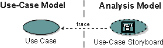
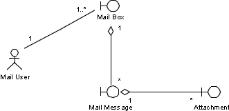
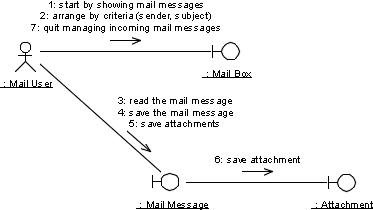

Guidelines:
Use-Case Storyboard

Use-Case Storyboard |
A use-case
storyboard is a logical and conceptual description of how a use
case is provided by the user interface, including the interaction required
between the actor(s) and the system.
|
More Information: Concepts:
User-Centered Design
Topics
Explanation

Use-case storyboards are used to understand and reason about the requirements
of the user interface, including usability requirements. They represent a
high-level understanding of the user interface, and are much faster to develop
than the actual user interface. The use-case storyboards can thus be used to
create and reason about several versions of the user interface before it is
prototyped, designed, and implemented.
A use-case storyboard is described in terms of boundary classes and their
static and dynamic relationships, such as aggregations, associations, and links.
Each boundary class is in turn a high-level representation of a window or
similar construct in the user interface. The benefits of this approach are the
following:
- It provides a high-level view of static window relationships such as
window containment hierarchies and other associations between objects in the
user interface.
- It provides a high-level view of dynamic window relationships such as
window navigation paths and other navigation paths between objects in the
user interface.
- It provides a way of capturing the requirements of each window or similar
construct in the user interface, by describing a corresponding boundary
class. This is because each boundary class defines responsibilities,
attributes, relationships, etc. that have a straightforward mapping to the
corresponding construct in the user interface.
- It provides a trace to a specific use case, thereby providing a seamless
integration with a use-case-driven approach for software engineering. As a
result, the user interface will be driven by the use cases that the system
is required to provide, and by the actors' (users) roles in, and
expectations of, these use cases.

A use-case storyboard in the analysis model is traced
(one-to-one) to a use case in the use-case model.
Describing
the Flow of Events - Storyboard
The following are guidelines on how to describe a flow of events -
storyboard:
- Start by clarifying the use case itself - not its user interface.
Start by keeping the description independent of the user interface,
especially if the use case is unexplored. This will help you capture the essence
of the use case, similar to the "essential
use cases" described in Concepts:
User-Centered Design. Then, later on, as the use case is
understood, the flow of events - storyboard can be augmented with user
interface and usability aspects.
- Keep action statements brief. The description does not
necessarily have to be self-contained, because it does not have to be
comprehensible to people other than user-interface designers. Action
statements that consist of brief steps give a better overview, since it
makes the use-case descriptions shorter. For example, when you describe how
the use case exchanges data with an actor, you should keep the description
brief and comprehensive; you can list the exchanged data at the end of the
line, within parentheses: "create person (name, address,
telephone)."
- Avoid sequences and modes. Human actors can often perform
the actions of the use case in different sequences, especially in
user-interface-intensive systems where the user is in control. Sequences
often imply modes of the user interface, and you should avoid modes if
possible. Thus, you should specify only the sequences that are mandatory in
the use case. For example, that the user must identify himself before he can
withdraw money from an ATM, or that the system must show the invoices to the
user, before the user can accept or refuse them.
- Be consistent with the use case. Since the use-case
storyboard can be described more or less in parallel with the corresponding
use case, these two artifacts should be kept consistent with, and give
feedback to, each other. In particular, the flow of events - storyboard of a
use-case storyboard should be kept consistent with the flow of events of the
corresponding use case. Note that this often requires an extensive
communication and feedback loop between the use-case author responsible for
the use case and the user-interface designer responsible for the use-case
storyboard.
Example:
The following is an example of an initial flow of events -
storyboard of a storyboard for the use case Manage Incoming Mail Messages,
before it is augmented with usability aspects.
a) The use case starts when the mail user requests to
manage mail messages, and the system displays the messages.
b) The mail user may then follow one or more of these
steps:
c) Arrange mail messages according to sender or subject.
d) Read the text of a mail message.
e) Save a mail message as a file.
f) Save a mail-message attachment as a file.
g) The use case terminates when the mail user requests to
quit managing incoming mail messages.
Note that this initial flow of events - storyboard is similar
to a step-by-step description of the corresponding use case as it may have been
described in the Activity:
Find Actors and Use Cases. Thus, use the step-by-step description of
the corresponding use case as input when creating the initial flow of events -
storyboard description.
This initial flow of events - storyboard description is then augmented with
various usability aspects, such as desired guidance,
average attribute
values and volumes of objects, and average
action usages (see below).
Desired
Guidance
A really usable system not only helps the user by automating simple and
repetitive tasks, but it also provides guidance, typically by (implicitly)
providing information for the tasks which cannot be automated. Such guidance can
for example be provided by "balloon help," or context derived
on-screen help.
This important input to the design of the user interface should be represented
by identifying the need for such desired guidance at specific points in the flow
of events of the use case.
The user-interface designer should walk through the flow of events, and
consider the following issues at each step:
- What guidance could the user possibly need?
- What guidance could the system possibly provide?
- What should be represented as desired guidance and what should not?
From the flow of events, the basic functionality of the system can be
identified. From the desired guidance, you should be able to identify
"optional" functionality that is not crucial for the user to be able
to carry out his work, but that might help him carry out the work by
(implicitly) providing him with information that he needs. Thus, anything that
could help you find such optional functionality should be represented as desired
guidance. You should not, however, represent desired guidance that only
identifies functionality we would find anyway, just by using good user-interface
shaping practice (for example, don't represent that the system should give the
user feedback on his operations, or show the user all the different options he
has, etc.).
Desired guidance can also be used to tell you what not to show, thus enabling
you to shape the user interface so that the user doesn't get swamped by
irrelevant information.
Desired guidance is not "requirements" in the same way as the flow
of events-it is more like "wants," or "nice-to-haves." When
you identify and describe desired guidance, you should not think in terms of
what the system shall eventually provide, but in terms of what the user might
need in addition to that; otherwise, you restrict our thinking. So, remember
that the desired guidance is not absolutely necessary, it is merely a means of
increasing usability.
Example:
The following is an example of the flow of events -
storyboard of a storyboard for the use case Manage Incoming Mail Messages
augmented with desired guidance (within []).
a) The use case starts when the mail user requests to
manage mail messages, and the system displays the messages. [The
user should be able to differentiate between new, read, and unread messages;
the user should also see the sender, subject, and priority of each message.]
b) The mail user may then follow one or more of these
steps:
c) Arrange mail messages according to sender or subject.
d) Read the text of a mail message.
e) Save a mail message as a file.
f) Save a mail-message attachment as a file. [The
user should be able to see the file types of the attachments.]
g) The use case terminates when the mail user requests to
quit managing incoming mail messages.
Desired guidance is often required in actions where the user has to make a
decision. The following points often apply to such decisions:
- They are non-trivial to the user.
- They impact peoples life or businesses surrounding the system (peoples or
businesses surrounding the system usually means the business, the user, and
the task the user is trying to carry out.)
- They matter once the use case has terminated.
Example:
In the flow of events - storyboard of the use case Manage
Incoming Mail Messages, step f), to save an attachment, is an obvious decision
made by the user. It therefore requires some guidance.
Average
Attribute Values and Volumes of Objects
It is often important to capture average attribute values and volumes of
objects that need to be managed by, or presented to, the user. The user
interface can then be optimized for these average values and volumes.
Example:
The following is an example of the flow of events -
storyboard of a storyboard for the use case Manage Incoming Mail Messages,
augmented with average attribute values and volumes (within {
}).
a) The use case starts when the mail user requests to
manage mail messages, and the system displays the messages. {An
average of 100 unread mail messages are shown simultaneously; and in 90% of
the cases, the subject line of a message is less than 40 characters.}
b) The mail user may then follow one or more of these
steps:
c) Arrange mail messages according to sender or subject.
d) Read the text of a mail message. {The
message text contains 100 characters on average.}
e) Save a mail message as a file.
f) Save a mail-message attachment as a file.{In
95% of the cases, there are less than two attachments.}
g) The use case terminates when the mail user requests to
quit managing incoming mail messages.
Average
Action Usage
Average action usage is captured to find actions that are heavily used as
opposed to actions that are seldom used. As a result, we will find both common
and uncommon sequences (flows) through the use case. This is important
information that can be used to prioritize and focus on intensively used parts
of the user interface and its navigation hierarchies (for example, by providing
shortcuts or additional toolbars in the user interface to perform common
actions).
Example:
The following is an example of the flow of events -
storyboard of a storyboard for the use case Manage Incoming Mail Messages,
augmented with average action usage (within ()).
a) The use case starts when the mail user requests to
manage mail messages, and the system displays the messages.
b) The mail user may then follow one or more of these
steps:
c) Arrange mail messages according to sender or subject. (Done
in more than 60% of the cases.)
d) Read the text of a mail message. (Done
in more than 75% of the cases.)
e) Save a mail message as a file. (Done
in less than 5% of the cases.)
f) Save a mail-message attachment as a file.
g) The use case terminates when the mail user requests to
quit managing incoming mail messages.
The conclusion from this description is that steps c) and d)
need a thorough user-interface support.
Summary:
Flow of Events - Storyboard
Example:
The following is an example of the final flow of events -
storyboard of a storyboard for the use case Manage Incoming Mail Messages,
augmented with the various usability aspects.
a) The use case starts when the mail user requests to
manage mail messages, and the system displays the messages. [The
user should be able to differentiate between new, read, and unread messages;
the user should also see the sender, subject, and priority of each message.]
{An average of 100 unread mail messages are shown simultaneously; and in 90%
of the cases, the subject line of a message is less than 40 characters.}
b) The mail user may then follow one or more of these
steps:
c) Arrange mail messages according to sender or subject. (Done
in more than 60% of the cases.)
d) Read the text of a mail message. {The
message text contains 100 characters on average.}
(Done in more than 75% of the cases.)
e) Save a mail message as a file. (Done
in less than 5% of the cases.)
f) Save a mail-message attachment as a file. [The
user should be able to see the file types of the attachments.]
{In 95% of the cases, there are less than two attachments.}
g) The use case terminates when the mail user requests to
quit managing incoming mail messages.
Thus, the basic idea with the flow of events - storyboard is to augment the
flow of events description with various usability aspects; this information is
then used further on to design a usable user interface. Also note that the
usability aspects as shown in the example above may be modified or extended with
other aspects, depending on the needs of the particular application type or
user-interface technology in use.
Creating
Boundary Class Diagrams
A use-case storyboard is realized by boundary classes and their interacting
objects. To illustrate the boundary classes participating in the use-case
storyboard, together with their relationships, we create class diagrams and
include them as part of the use-case storyboard.
Example:
The following is a class diagram owned by the use-case
storyboard corresponding to the Manage Incoming Mail Messages use case:

Class diagram including the Mail User actor and the
boundary classes Mail Box, Mail Message, and Attachment, participating in a
use-case storyboard corresponding to the Manage Incoming Mail Messages use case.
We let it be understood from the context that a Mail User interacts with all
objects contained in the aggregation hierarchy under Mail Box.
For more information on the boundary classes and their relationships, refer
to Guidelines: Boundary Class
(Modeling the User Interface).
Creating
Boundary Object Interaction Diagrams
To illustrate the boundary objects participating in the use-case storyboard,
and their interactions with the user, we use collaboration or sequence diagrams.
This is useful for use cases with complex sequences or flows of events.
Example:
The following is a collaboration diagram owned by the
use-case storyboard corresponding to the Manage Incoming Mail Messages use case.

Collaboration diagram including the Mail
User actor and boundary objects of Mail Box, Mail Message, and Attachment,
participating in a use-case storyboard realizing the Manage Incoming Mail
Messages use case.
Complementing
the Diagrams of a Use-Case Storyboard
If necessary, the diagrams of a use-case storyboard may be further clarified
by using the flow of events - storyboard as a complementary textual description.
This can be done by augmenting the flow of events - storyboard with the boundary
classes involved.
Example:
The following is an example of the flow of events -
storyboard of a storyboard for the use case Manage Incoming Mail Messages,
augmented with boundary classes (within "").
a) The use case starts when the mail user requests to
manage mail messages, and the system displays the messages. [The
user should be able to differentiate between new, read, and unread messages;
the user should also see the sender, subject, and priority of each message.]
{An average of 100 unread mail messages are shown simultaneously; and in 90%
of the cases, the subject line of a message is less than 40 characters.} "Mail
Box"
b) The mail user may then follow one or more of these
steps:
c) Arrange mail messages according to sender or subject. (Done
in more than 60% of the cases.) "Mail
Box"
d) Read the text of a mail message. {The
message text contains 100 characters on average.}
(Done in more than 75% of the cases.) "Mail
Message"
e) Save a mail message as a file. (Done
in less than 5% of the cases.) "Mail
Message"
f) Save a mail-message attachment as a file. [The
user should be able to see the file types of the attachments.]
{In 95% of the cases, there are less than two attachments.}
"Mail Message" "Attachment"
g) The use case terminates when the mail user requests to
quit managing incoming mail messages. "Mail
Box"
Capturing
Usability Requirements on the Use-Case Storyboard
Usability requirements may define how high the usability of the user
interface must be. Such requirements may for example be found in the Artifact:
Supplementary Specifications. This means that the usability
requirements should not be set to what you believe that the system can achieve,
but to the lowest level of usability that the system must achieve, in order to
be used.
What the system must achieve, in order to be used, depends mostly on what the
alternative to using the system is. It is reasonable to require that the system
should be significantly more usable than the alternatives. The alternatives can
be to utilize:
- Existing manual procedures.
- Legacy system(s).
- Competing products.
- Earlier version(s) of the system.
Usability requirements can also come from the need to economically justify
the new system: if the customer has to pay $3 million for the new system, he
might want to impose usability requirements that imply that he will save perhaps
$1 million per year because of decreased workload on his human resources.
Usability requirements on a use-case storyboard typically specify:
- Maximum execution time - how long it should take a trained user to execute
a common scenario of the use case.
- Maximum error rate - how many errors a trained user will average for a
common scenario of the use case.
The only errors that are relevant to measure are those that are unrecoverable
and will have negative effects on the organization, such as losing business, or
causing damage to monitored hardware. If the only consequence of an error is
that it takes time to fix, this will affect the measured execution time.
The learning time should be measured as the time it takes before the user can
execute a scenario faster than the specified maximum execution time.
Note that the usability requirements should not work as a target, i.e., upper
limit. Usability requirements should define the absolute lowest acceptable
system usability. Thus, you should not necessarily stop improving usability when
usability requirements are fulfilled.
Example:
The following is an example of usability requirements on the
use case Manage Incoming Mail Messages, as captured on its corresponding
use-case storyboard.
-
The Mail User should be able to arrange Mail Messages
with a single mouse click.
-
The Mail User should be able to scroll Mail Message texts
by pressing single keyboard buttons.
-
The Mail User should not be disturbed by incoming Mail
Messages when reading existing Mail Messages.
Referring
to the User-Interface Prototype from the Use-Case Storyboard
To further clarify the use-case storyboard, it can refer to the parts (e.g.,
windows) of the user-interface prototype corresponding to its participating
boundary classes. This can be useful if parts of the user-interface prototype
already exist when the storyboard is described.
Use
Use-case storyboards are primarily used in initial stages of development,
before the user interface is prototyped, as a "reasoning" tool to
capture requirements on the user interface.
Use-case storyboards are often considered as transient artifacts, and may be
left unmaintained once the project is up to speed prototyping or implementing
the user interface. However, in some cases it might be of value to maintain the
use-case storyboards through a number of iterations, for example if there are
complex requirements posed on the user interface which take time (over several
iterations) to be understood.
The use-case storyboards need not be described with any other readers in mind
than use-case designers, since the use-case storyboards are conceptual and
high-level, and may appear ambiguous to other individuals. Instead, it is their
concrete manifestation (i.e. the user interface itself or a prototype of it)
that is discussed, reviewed, and use tested with other stakeholders such as
end-users. Still, the use-case storyboards can be used by the user-interface
designer as a reference during use testing to focus on the right issues to test
(e.g., complex interaction sequences).
There is a compromise in the recommendation above; if it is significantly
cheaper to develop the storyboards than the actual user-interface prototype, it
might be worth while having users reviewing the storyboards directly before the
prototype is implemented. The cost for this is that the descriptions of the
storyboards need to be clear and self-contained so that they can be understood
by the users; creating such descriptions can require substantial development
resources.
In cases where use-case storyboards are outlined in the requirements
discipline, and a user interface prototype is created, the corresponding boundary
classes are a good input to analysis activities. However, one sometimes also
needs to create use-case storyboards during analysis to trig corresponding
user-interface design and implementation activities, because:
- Some projects do not create a user-interface prototype; instead, they
design and implement the user interface directly with no prototype as input.
- Some projects do create a user-interface prototype, but only for a small
number of use cases. The rest of the use cases do not have their user
interface prototyped.
Copyright
© 1987 - 2001 Rational Software Corporation
|  Artifacts >
Artifacts >
 Requirements Artifact Set >
Requirements Artifact Set >
 {More Requirements Artifacts} >
{More Requirements Artifacts} >
 Use-Case Storyboard >
Use-Case Storyboard >
 Guidelines
Guidelines